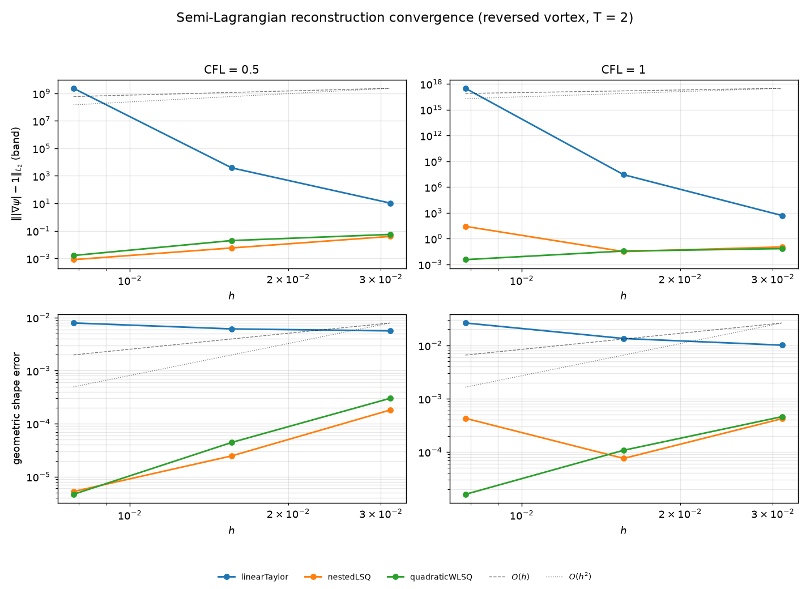
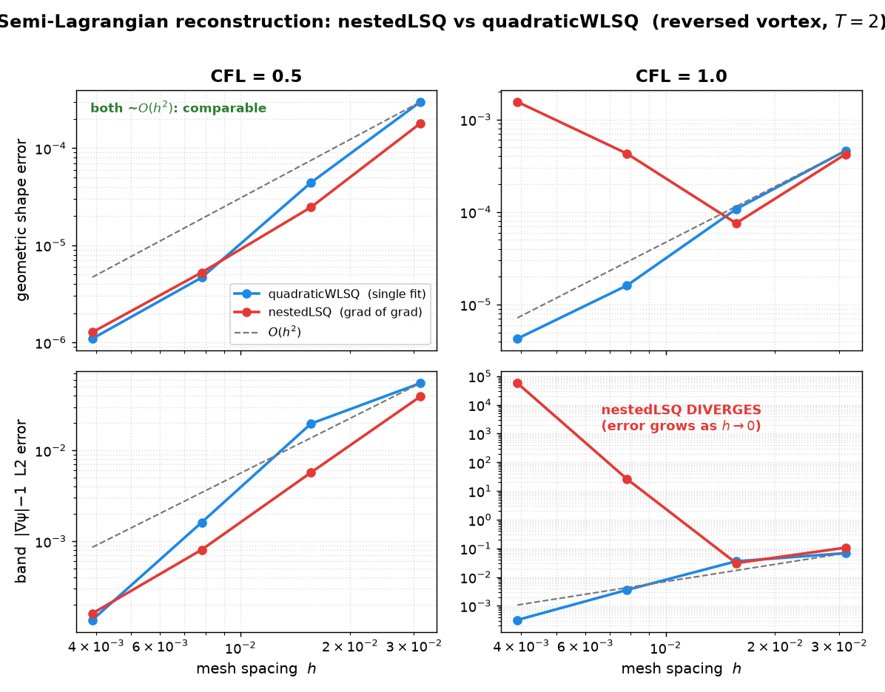
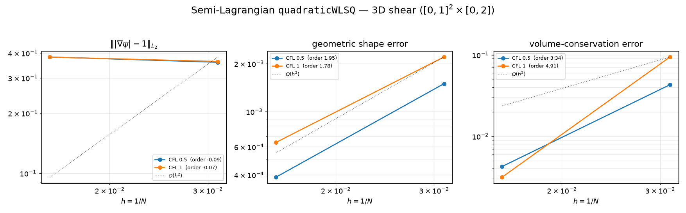
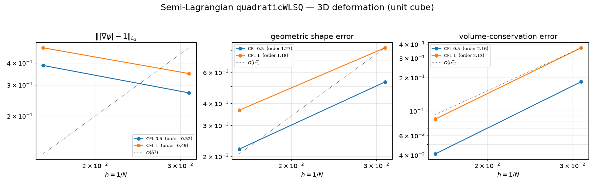

leia
An unstructured Finite-Volume Level Set Method in OpenFOAM
Semi-Lagrangian level set
characteristic (semi-Lagrangian) advection · weighted least-squares reconstruction · 2D & 3D convergence
Tomislav Marić · Julian Reitzel · Mathis Fricke · Dieter Bothe
MMA, TU Darmstadt
libleiaLevelSet | solver leiaSemiLagrangeLevelSetFoam
Authors: T. Marić · J. Reitzel · M. Fricke · D. Bothe — MMA, TU Darmstadt
Roadmap
- 1The level set & the phase indicator — \(\psi\), advection, geometric & analytic \(\alpha\)
- 2Semi-Lagrangian advection — characteristics, the Taylor foot, LSQ reconstruction; 2D & 3D convergence
- 3Conclusions — what works best — the reconstructions ranked
- 4Software design — runtime model selection, extend without touching existing code
Part 1 of 4
The level set & the phase indicator
\(\psi\), its advection, and recovering \(\alpha\) geometrically / analytically
- 1The level set & the phase indicator
- 2Semi-Lagrangian advection
- 3Conclusions
- 4Software design
Previously: Title & roadmap · Next: Semi-Lagrangian advection
The level set
Signed-distance field \(\psi(\mathbf{x},t)\):
\[ \Sigma = \{\mathbf{x} : \psi = 0\}, \quad \Omega^{-}=\{\psi<0\} \;(\text{phase A}) \]Signed-distance property
\[ |\nabla\psi| = 1 \]Distance to \(\Sigma\); sign encodes the phase.
Advection
Conservative transport of the level set:
\[ \frac{\partial \psi}{\partial t} + \nabla\!\cdot(\mathbf{u}\,\psi) = S \]discretised with the finite-volume flux \(\phi = (\mathbf{u}_f\cdot\mathbf{S}_f)\):
fvm::ddt(psi) + fvm::div(velExt->phi(), psi) == source->fvmsdplsSource(psi, U)Phase indicator / Heaviside
Volume fraction of phase A in cell \(c\):
\[ \alpha_c = \frac{1}{|\Omega_c|}\int_{\Omega_c} H(-\psi)\,\mathrm{d}V, \qquad H(s)=\begin{cases}1 & s>0\\ 0 & s\le 0\end{cases} \]Problem: an algebraic Heaviside of the transported \(\psi\)
- is only first order at the interface, and
- relies on \(\psi\) staying a signed distance (\(|\nabla\psi|=1\)).
Both assumptions are violated by advection.
Idea: recover \(\alpha\) geometrically
Per cell, build a linear reconstruction of \(\psi\):
\[ \psi^{\ell}_c(\mathbf{x}) = \mathbf{n}_c\cdot\mathbf{x} + d_c \]then compute \(\alpha_c\) as the fraction of the cell below that plane.
- \(\alpha\) inherits the order of \(\psi\)
- no \(|\nabla\psi|=1\) requirement
LLS reconstruction
Shared code: levelSetPlaneReconstruction
Fit the plane over cell \(c\) and its neighbours \(N_c\) by least squares:
\[ \min_{\mathbf{n}_c,\,d_c}\; \sum_{k\in\{c\}\cup N_c}\big(\psi_k-(\mathbf{n}_c\cdot\mathbf{x}_k+d_c)\big)^2 \]Normal equations — a \(4\times4\) system for \((n_x,n_y,n_z,d_c)\):
\[ \left[\begin{array}{cccc} \sum x_k^2 & \sum x_k y_k & \sum x_k z_k & \sum x_k \\ \sum x_k y_k & \sum y_k^2 & \sum y_k z_k & \sum y_k \\ \sum x_k z_k & \sum y_k z_k & \sum z_k^2 & \sum z_k \\ \sum x_k & \sum y_k & \sum z_k & N \end{array}\right] \!\begin{bmatrix} n_x\\ n_y\\ n_z\\ d_c \end{bmatrix} =\begin{bmatrix} \sum \psi_k x_k\\ \sum \psi_k y_k\\ \sum \psi_k z_k\\ \sum \psi_k \end{bmatrix} \]2D fix: in an empty direction, row/col is decoupled and \(n_{\text{cmpt}}\!=\!0\)
is pinned → keeps the \(4\times4\) system non-singular (mesh.geometricD()).
Geometric Heaviside
geometricPhaseIndicator — clip the cell against the plane
The below-plane sub-volume is found by polygon/polyhedron intersection (divergence-theorem volume of the clipped cell).
Analytic volume fraction — Detrixhe & Aslam (2016)
Decompose the cell into tets (cell centroid \(\mathbf{x}_c\), face centroid \(\mathbf{x}_f\), face-edge vertices):
Sort vertex distances \(\psi_1\!\le\!\psi_2\!\le\!\psi_3\!\le\!\psi_4\). Fraction of the tet in \(\Omega^{-}\):
Analytic volume fraction — properties
Assemble the cell value as the tet-volume-weighted mean:
\[ \alpha_c = \frac{\sum_t f_t\,V_t}{\sum_t V_t} \]Tolerance-free: the denominators are cross-interface distance gaps, bounded away from zero, so there is no clipping tolerance — it matches the polygon clipping to machine precision on the same plane, and stays robust in 2D.
The middle (two-in / two-out) case uses the corrected \(\Omega^{-}\) form — the paper's printed numerator gives the complement.
geometric vs detrixheAslam — 2nd order to the exact area

Static (\(t=0\)) verification. Initialise the circle
(\(r=0.15\)) on the pseudo-2D shear-vortex mesh at \(N=32\!\to\!256\); the indicator volume
\(V_\alpha=\sum_c\alpha_c V_c\) converges to the exact cylinder volume
\(\pi r^2 t_z\) — equivalently the circle area \(\pi r^2\) with the slab height
\(t_z=0.1\) divided out — at order \(\approx 2\). Both indicators build the
same LLS plane, so their volumes are identical to 8 digits;
detrixheAslam is the tolerance-free, 2D-robust integration.
Part 2 of 4
Semi-Lagrangian advection
the parallel research line: don't fix the velocity — follow the characteristic
- 1The level set & the phase indicator
- 2Semi-Lagrangian advection
- 3Conclusions
- 4Software design
Previously: The level set & the phase indicator · Next: Conclusions
Semi-Lagrangian — motivation: skip the equation, follow the flow
Two routes to an accurate \(\psi\) near \(\Sigma\). Velocity extension (Part 2) corrects where the velocity points, then advects with a flux scheme. Semi-Lagrangian advection corrects nothing: it uses the exact property of pure advection — \(\psi\) is constant along characteristics.
For each arrival cell centre \(\mathbf{x}_c\) at \(t^{n+1}\), trace the characteristic backward to its departure foot \(\mathbf{x}_d\) at \(t^n\) and copy the value:
\[ \psi^{n+1}(\mathbf{x}_c) = \psi^{n}(\mathbf{x}_d). \]Why it is solve-free and stable for CFL \(\le 1\) → next slide. Courant–Isaacson–Rees (1952); foot: Marić thesis §6.3.1.
Semi-Lagrangian — why it works
- No flux, no divergence, no linear solve — a per-cell assignment.
- Unconditionally stable for CFL \(\le 1\): the foot stays inside the arrival cell's point-neighbour hull ⇒ evaluation is interpolation, never extrapolation ⇒ no cell search.
- Accuracy is set by the reconstruction, not the time step — a high-order fit at the foot gives a high-order scheme at any stable CFL.
Courant–Isaacson–Rees (1952); Taylor-displacement foot: Marić PhD thesis §6.3.1, eqs. (165)–(167).
The backward foot — explicit Taylor displacement
Trace the characteristic backward with the Taylor-series point-displacement integrator (Marić thesis eqs. 165–167), fully explicit, at cell centres:
\[ \mathbf{x}_d = \mathbf{x}_c - \mathbf{u}_c^{n+1}\,\Delta t + \tfrac{1}{2}\Big[\tfrac{\mathbf{u}_c^{n+1}-\mathbf{u}_c^{n}}{\Delta t} + \big(\mathbf{u}_c^{n+1}\!\cdot\nabla_c\big)\mathbf{u}^{n+1}\Big]\Delta t^2 \]- Per-step displacement error \(O(\Delta t^3)\); with quadratic spatial reconstruction the scheme is globally \(O(h^2)\) at fixed CFL. The \(\tfrac12\) is essential — drop it and the local error falls to \(O(\Delta t^2)\).
- \(\partial_t\mathbf{u}\approx(\mathbf{u}^{n+1}-\mathbf{u}^{n})/\Delta t\) (backward Euler) is first-order — sufficient, it multiplies \(\Delta t^2\).
- \(\nabla_c\mathbf{u}^{n+1}\) is the least-squares cell gradient
(fvSchemes key
gradU,pointCellsLeastSquares) — never Green–Gauss. Works unchanged when \(\mathbf{u}\) is a Navier–Stokes field, not only analytic. - Guard: if \(|\mathbf{x}_c-\mathbf{x}_d|\) exceeds the stencil radius (CFL > 1) the code warns and the step is clipped — no silent extrapolation.
- Robustness: a generous value cap (\(\pm10\times\) stencil range) prevents runaway overflow without touching a well-behaved reconstruction; a Barth–Jespersen slope limiter is available but measured to cost convergence order (over the wide point-neighbour stencil) — off by default.
Verified: for uniform \(\mathbf{u}\) the acceleration term vanishes and \(\mathbf{x}_d = \mathbf{x}_c - \mathbf{u}\,\Delta t\) exactly (unit test, \(\sim\!10^{-14}\)).
Semi-Lagrangian — formulation & algorithm
Governing relations (per time step \(t^n\!\to\!t^{n+1}\)):
\[ \frac{D\psi}{Dt}=0 \;\;\Longrightarrow\;\; \boxed{\;\psi^{n+1}(\mathbf{x}_c)=\psi^{n}(\mathbf{x}_d)\;} \] \[ \mathbf{x}_d=\mathbf{x}_c-\mathbf{u}_c^{n+1}\Delta t +\tfrac12\Big[\underbrace{\tfrac{\mathbf{u}_c^{n+1}-\mathbf{u}_c^{n}}{\Delta t}}_{\partial_t\mathbf{u}} +\underbrace{(\mathbf{u}_c^{n+1}\!\cdot\nabla_c)\mathbf{u}^{n+1}}_{(\mathbf{u}\cdot\nabla)\mathbf{u}}\Big]\Delta t^2 \] \[ \psi^{n+1}_c=\psi_c^{n}+\phi_c\big(R_c(\mathbf{x}_d)-\psi_c^{n}\big),\qquad \mathrm{CFL}=\frac{|\mathbf{x}_d-\mathbf{x}_c|}{r_{\text{stencil}}}\le 1 \]\(R_c\): per-cell reconstruction of \(\psi^n\) over the cell–point–cell (CPC) stencil; \(r_{\text{stencil}}\): max stencil-cell distance; \(\phi_c\!\in\![0,1]\): Barth–Jespersen limiter (\(=1\) by default). No flux, no divergence, no linear solve.
Per-step algorithm (slAdvection::advect):
- Gather \(\psi^n\) & cell centres over each cell's CPC stencil —
one paired halo exchange (
mapDistribute; remote proc/cyclic neighbours native). - \(\nabla\mathbf{u}^{n+1}\leftarrow\) LSQ gradient (fvSchemes
gradU). recon.update(\(\psi^n\)): build the per-cell polynomial \(R_c\).- For each cell \(c\): form acceleration \(\mathbf{a}_c\), foot \(\mathbf{x}_d\) (boxed formula); guard \(|\mathbf{x}_d-\mathbf{x}_c|\le r_{\text{stencil}}\).
- \(v\leftarrow\) limited \(R_c(\mathbf{x}_d)\); robustness: non-finite \(\to\) stencil mid, else generous cap \(\pm10\times\) range.
- \(\psi^{n+1}_c\leftarrow v\);
correctBoundaryConditions();postAdvect()hook.
Explicit, per-cell, embarrassingly parallel; the only communication is step 1. Local displacement error \(O(\Delta t^3)\) \(\Rightarrow\) \(O(h^2)\) at fixed CFL with a quadratic \(R_c\).
Reconstruction of \(\psi^n\) at the foot — three, pluggable
Runtime-selectable (levelSet { semiLagrangian { reconstruction ...; } }).
Each reproduces the cell value: evaluate(c, x_c) == psi[c] exactly.
| model | form | order | cost / notes |
|---|---|---|---|
linearTaylor |
\(\psi_c + \mathbf{g}_c\!\cdot\mathbf{d}\) | \(O(h)\) | baseline (\(\equiv\) 1st-order upwind); validates the pipeline |
nestedLSQ |
\(+\tfrac12\mathbf{d}^{\!\top}\!\mathbf{H}_c\mathbf{d}\), \(\mathbf{H}=\nabla(\nabla\psi)\) | \(O(h^2)\) at CFL\(\le\tfrac12\); diverges at CFL\(\,1\) |
Hessian = gradient-of-gradient-field ⇒ amplifies noise when the foot nears the stencil edge (see next slide) |
quadraticWeightedLeastSquares ★ |
one IDW-weighted quadratic fit over the CPC stencil | \(O(h^2)\) incl. CFL\(\,1\) | production — the robust choice; cached pseudo-inverse (1 halo exchange); the single simultaneous fit stays 2nd order at every CFL |
bandQuadraticWeightedLeastSquares |
quadratic in the band; far field re-extended by distance | stable; \(\sim\!O(1)\) floor | memory O(band), per-step fit — but the crude far-field re-extension caps convergence (needs a high-order reinit for \(O(h^2)\)) |
- All three use least squares over the cell-point-cell stencil (linear-exact on arbitrary polyhedra) — nested LSQ is therefore quadratic-exact. No Green–Gauss anywhere in the chain.
- Unit-tested exact: a global quadratic \(\psi\) is reproduced by
nestedLSQ/quadraticWeightedLeastSquaresto \(\sim\!10^{-16}\); a linear field bylinearTaylor; centre value to \(0\).
quadraticWeightedLeastSquares — the weighted least-squares fit
Fit the full quadratic (2D shown; the empty direction is dropped) to the increments \(\psi_i-\psi_c\), \(\mathbf{d}_i=\mathbf{x}_i-\mathbf{x}_c\), over the cell–point–cell stencil:
\[ R_c(\mathbf{x})=\psi_c+\sum_{k=1}^{n_k}a_k\,b_k(\mathbf{d}),\qquad \mathbf{b}=\big(d_x,\,d_y,\,\tfrac12 d_x^2,\,\tfrac12 d_y^2,\,d_xd_y\big),\quad n_k=5 \] \[ \mathbf{a}=\arg\min_{\mathbf{a}}\sum_{i=1}^{N}w_i^{2}\big(\mathbf{b}(\mathbf{d}_i)\!\cdot\!\mathbf{a}-(\psi_i-\psi_c)\big)^2, \quad w_i=\frac{1}{|\mathbf{d}_i|},\quad A_{ik}=w_i\,b_k(\mathbf{d}_i) \] \[ \mathbf{a}=\underbrace{(A^{\top}A)^{-1}A^{\top}}_{\text{Moore–Penrose }A^{+}\,(\text{QR})}\,\mathbf{b}_w, \;(b_w)_i=w_i(\psi_i-\psi_c) \;\;\xrightarrow{\text{fold }M_{ki}=A^{+}_{ki}w_i}\;\; a_k=\sum_i M_{ki}(\psi_i-\psi_c) \]Fitting \((\psi_i-\psi_c)\) forces \(R_c(\mathbf{x}_c)=\psi_c\) exactly. Mesh geometry is static \(\Rightarrow\) \(A^{+}\) (hence \(M\)) is built once per cell; each step is then one contiguous mat–vec — no per-cell allocation. \(n_k=9\) in 3D (3 linear + 3 pure-quadratic + 3 cross).
quadraticWeightedLeastSquares — the stencil & the fit
- The cell–point–cell (CPC) stencil: the arrival cell \(\mathbf{x}_c\) plus all cells sharing a point with it (8 in 2D structured, up to 26 in 3D) — wider than a face-neighbour stencil, so a full quadratic is over-determined.
- Inverse-distance weights \(w_i=1/|\mathbf{d}_i|\): the near axial neighbour (heavy arrow) dominates the fit; the far diagonal (light) is down-weighted — this is what keeps the Hessian bounded and second order even when the foot \(\mathbf{x}_d\) reaches the stencil edge (CFL 1).
- The fitted quadratic \(R_c\) is evaluated once, at the departure foot \(\mathbf{x}_d\) (hollow), giving \(\psi^{n+1}_c=R_c(\mathbf{x}_d)\).
- Remote (processor / cyclic) stencil cells are gathered by the single paired halo exchange — serial and \(np{=}4\) agree to \(\sim\!10^{-12}\).
quadraticWeightedLeastSquares — discretization (UFVM, parallel)
- Stencil: OpenFOAM's cached cell-point-cell stencil
(
centredCPCCellToCellStencil); itscollectDatagathers the remote (processor / cyclic) point neighbours through amapDistribute— one halo exchange of \(\psi^n\) per step; the cell centres are gathered once. - Fit: per cell, minimise \(\sum_n w_n\big(P(\mathbf{d}_n)-(\psi_n-\psi_c)\big)^2\) over the quadratic basis \(\{d_x,d_y,[d_z],\tfrac12 d_x^2,\tfrac12 d_y^2,[\tfrac12 d_z^2], d_xd_y,[\ldots]\}\) (the empty direction is dropped on 2D meshes), IDW weights \(w_n=1/|\mathbf{d}_n|\). Fitting \((\psi_n-\psi_c)\) drops the constant ⇒ the centre value is reproduced exactly.
- Solve: Moore–Penrose pseudo-inverse (
QRMatrix, Householder QR). The stencil geometry is fixed while the mesh is static ⇒ the per-cell pseudo-inverse is cached once; the per-step cost is one small matrix–vector product per cell. Under-determined boundary cells fall back to a linear fit (counted).
Source:
src/leiaLevelSet/semiLagrangian/
(slAdvection, slReconstruction + 3 models); solver
leiaSemiLagrangeLevelSetFoam.
quadraticWeightedLeastSquares — the hot loop
- Performance (hpctoolkit-profiled): that per-cell mat–vector product was ~28% of the whole solver and did not vectorise. Folding the IDW weight into the cached map and storing it flat row-major (so the update is a contiguous pointer reduction with no per-cell allocation) cut it to ~20% — −17% wall-clock, −23% CPU at \(N{=}128\), machine-precision identical. (A hand-unrolled mat–vec regressed — the stencil is too short — and was reverted.)
- Dedicated scheme keys
gradPsi/gradGradPsi/gradU(allpointCellsLeastSquares) — the sub-steps never share thegrad(psi)advection scheme.
Parallel-verified: serial ≡ np=4 to \(10^{-12}\)
(halo exchange of \(\psi^n\) via mapDistribute).
slAdvection::advect() — code
const scalar dt = mesh_.time().deltaTValue();
const volTensorField gradU(fvc::grad(Unew, "gradU")); // LSQ grad u^{n+1}
recon_->update(psi); // fit psi^n (halo + QR)
forAll(C, c)
{
const vector accel = (Unew[c] - Uold[c])/dt // du/dt (backward Euler)
+ (Unew[c] & gradU[c]); // (u.grad)u
const point xd = C[c] - Unew[c]*dt + 0.5*accel*dt*dt; // Taylor backward foot
// guard: |xd - C[c]| within the point-neighbour stencil radius (CFL<=1)
newPsi[c] = recon_->evaluate(c, xd); // psi^{n+1}(x_c)=psi^n(x_d)
}
psi.primitiveFieldRef() = newPsi; // assign, then BCs
psi.correctBoundaryConditions();
// quadraticWeightedLeastSquares::evaluate -- the arrival cell's OWN cached polynomial:
// d = x - C[c]; return psi_c + sum_k coeffs_c[k] * basis_k(d);Steps 3 and 5 are embarrassingly parallel per-cell loops;
the only communication is the one halo exchange inside recon_->update().
Serial and np=4 results match to round-off.
Reconstruction convergence — the order jump

Reversed vortex, \(T=2\). Shape error (the trustworthy
metric): at CFL \(\le\tfrac12\) both quadratic fits converge \(\approx O(h^2)\)
(measured order: nestedLSQ 2.4, quadraticWeightedLeastSquares 2.8) —
they are comparable there. linearTaylor is flat
(\(\equiv\) diffusive first-order upwind) and its band \(|\nabla\psi|-1\) blows up.
The decisive split is at CFL \(=1\) (next slide): quadraticWeightedLeastSquares
holds \(O(h^2)\), nestedLSQ diverges.
bandQuadraticWeightedLeastSquares is stable and memory-light but its crude far-field
re-extension caps it below first order.
Why quadraticWeightedLeastSquares, not nestedLSQ

Reversed vortex \(T=2\), \(N=32\!\to\!256\).
At CFL \(\le\tfrac12\) they are comparable (both \(\approx O(h^2)\); nestedLSQ
is even marginally cheaper — no cached inverse). At CFL \(=1\) nestedLSQ
diverges: its Hessian \(\mathbf{H}=\nabla(\nabla\psi)\) is a gradient of a gradient
field, which amplifies noise like \(1/h\); as the foot reaches the stencil edge the
bad curvature feeds back and \(|\nabla\psi|\) explodes (\(5.7\times10^4\) at \(N=256\)).
quadraticWeightedLeastSquares fits \(\mathbf{g}\) and \(\mathbf{H}\) together in one
IDW-weighted, bounded least-squares — it stays \(O(h^2)\) at every CFL.
Semi-Lagrangian in 3D — two prescribed flows
3D shear — shear3D, domain
\([0,1]^2\times[0,2]\) ⇒ \(N\times N\times 2N\) cubic cells (\(h=1/N\)).
3D deformation — LeVeque deformation3D,
unit cube \([0,1]^3\) ⇒ \(N^3\) cells. Stretch/fold then unwind.
Both start from a sphere \(r=0.15\) and, with the oscillation factor, reverse at \(T=3\): the exact solution returns to the initial sphere, so the reversed error is a true accuracy measure (no closed-form mid-flow needed).
- Reconstruction: the production
quadraticWeightedLeastSquares(full). - Resolutions \(N\in\{32,64\}\); CFL \(\in\{0.5,1.0\}\). (\(128^3\) is memory-bound on the 15 GB test box even with the single-precision fit cache — ready to run on a higher-memory node.)
- Phase indicator
detrixheAslam; 8 MPI ranks (scotch), serial\(\equiv\)parallel verified in 2D. - Same solver (
leiaSemiLagrangeLevelSetFoam) and error norms as the 2D shear study — gradient \(\||\nabla\psi|-1\|_{L_2}\), geometric shape error, volume conservation.
config/3DshearSL.yaml · config/3DdeformationSL.yaml.
3D shear — convergence

Reversed 3D shear, \(T=3\), quadraticWeightedLeastSquares.
Geometric shape error converges at \(\approx O(h^2)\) at both CFL \(0.5\) and \(1\)
— the 2D second-order result carries over to 3D. (Measured orders annotated in the
legend.)
3D deformation — convergence

Reversed LeVeque deformation (unit cube), \(T=3\),
quadraticWeightedLeastSquares. The most demanding prescribed 3D test: the sphere is drawn into
a thin filament at \(T/2\). Shape error converges at order \(\approx1.2\text{--}1.3\)
on the \(32\text{--}64\) grids — the filament is under-resolved there, so the coarse-grid
rate sits below the \(O(h^2)\) of the (filament-free) shear flow; a finer grid is expected to
recover it. Volume error converges faster (\(\approx O(h^{1.8})\)). (Orders in the legend.)
Part 3 of 4
Conclusions
what works best — the reconstructions, ranked by error
- 1The level set & the phase indicator
- 2Semi-Lagrangian advection
- 3Conclusions
- 4Software design
Previously: Semi-Lagrangian advection · Next: Software design
Semi-Lagrangian — ranked by error
Reversed vortex, geometric shape-error convergence order (\(N=32\!\to\!256\)); the reconstruction of \(\psi^n\) at the departure foot.
| # | reconstruction | order @CFL \(\tfrac12\) | order @CFL 1 | notes |
|---|---|---|---|---|
| 1 ★ | quadraticWeightedLeastSquares |
2.8 | 2.3 | \(O(h^2)\) at every CFL, \(|\nabla\psi|\) bounded — production |
| 2 | nestedLSQ |
2.4 | −0.8 (diverges) | matches quadratic only at CFL\(\le\tfrac12\); grad-of-grad Hessian blows up at CFL 1 |
| 3 | bandQuadraticWeightedLeastSquares |
~0.5 | ~0.5 | stable + memory-\(O\)(band), but crude far-field re-extension caps it below 1st order |
| 4 | linearTaylor |
~0 | ~0 | 1st-order baseline; \(|\nabla\psi|\) blows up — pipeline validation only |
Cost: after the hpctoolkit optimisation, quadraticWeightedLeastSquares
is within ~10% CPU of nestedLSQ and comparable memory at \(N=128\) —
so the robust 2nd-order choice carries no cost penalty.
Which method — by problem
- Prescribed-velocity level-set transport → the semi-Lagrangian solver
leiaSemiLagrangeLevelSetFoamwithquadraticWeightedLeastSquares: lowest shape error, \(O(h^2)\) up to CFL 1 (in 2D and 3D), best \(|\nabla\psi|\) regularity, and no linear solve. - Coupled flow (\(\mathbf U\) is a momentum-equation solution, not prescribed) is a different problem — there the Eulerian solver needs a velocity extension (see the companion deck).
- Open item: no reinitialization, so \(|\nabla\psi|=1\) is not maintained over very long integrations (a redistancing partner is future work).
All numbers regenerate from config/bulkVortexSL.yaml / bulkVortexSLHighRes.yaml (2D) and config/3DshearSL.yaml / config/3DdeformationSL.yaml (3D).
Part 4 of 4
Software design
runtime model selection; add a model without touching existing code
- 1The level set & the phase indicator
- 2Semi-Lagrangian advection
- 3Conclusions
- 4Software design
Previously: Conclusions · Next: — (end)
Software Design
Runtime Model Selection
The maths and discretization of every model are settled. This section shows how they plug together: one runtime-selectable object per concept, chosen from a dictionary, discovered from the object registry.
Runtime selection design
- Abstract base phaseIndicator with an RTS table +
New(const fvMesh&) - Concrete:
geometric,detrixheAslam,heaviside - Chosen from
fvSolution:
levelSet / phaseIndicator / type - Fields (
psi,alpha,NarrowBand,nc) discovered from the object registry by configurable name keys.
Same pattern, everywhere
RTS + object registry = pluggable, KISS.
Architecture map
One library of runtime-selectable models feeds two thin solvers; a Snakemake suite verifies them.
Add your own model — without touching existing code
The velocity-extension hierarchy is runtime-selected (open/closed): a new model is a new class, no edits to existing ones.
- Derive from interfaceExtension (reuse the seed / band / flux backbone) — or from velocityExtension for full control.
TypeName("myModel");+ a(const fvMesh&)constructor.addToRunTimeSelectionTable(velocityExtension, myModel, Mesh);- Implement the one pure-virtual
extend()(fillUext_in the band from the pinned seed layer). - Add the
.Cto src/leiaLevelSet/Make/files;wmake. - Select at runtime:
levelSet{ velocityExtension{ type myModel; } }.
Templates: anisotropicDiffusion.C (one linear solve) and pseudoTime.C (iterative march).
Skeleton
// myExtension.H
class myExtension : public interfaceExtension
{
public:
TypeName("myModel");
explicit myExtension(const fvMesh& mesh) : interfaceExtension(mesh) {}
virtual ~myExtension() = default;
protected:
virtual void extend() override; // the only thing a model must define
};
// myExtension.C
addToRunTimeSelectionTable(velocityExtension, myExtension, Mesh);
void Foam::myExtension::extend()
{
// seedCells_ already hold U_Sigma (Dirichlet); nHat_, band_ are built.
// Propagate Uext_ through the band so (n . grad) Uext = 0, seed pinned.
// e.g. fvm::laplacian(...) / fvm::div(...) + fvMatrix::setValues(seedCells_, ...).
}No existing model, solver, or case is modified — only a
new class + a Make/files line + a dictionary type.